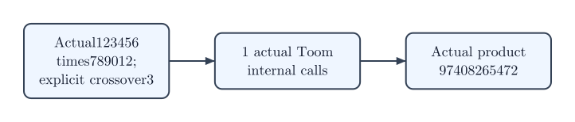
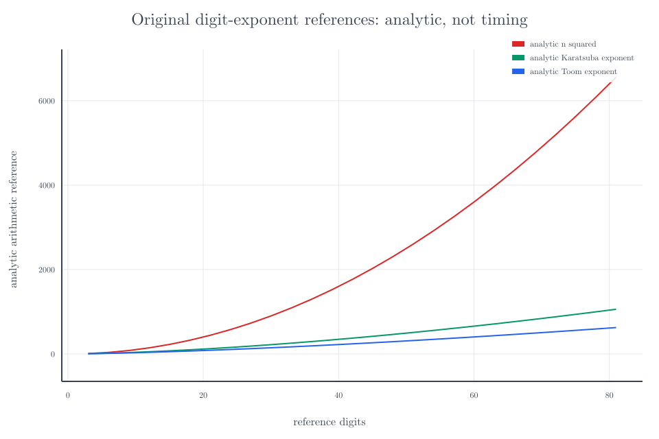
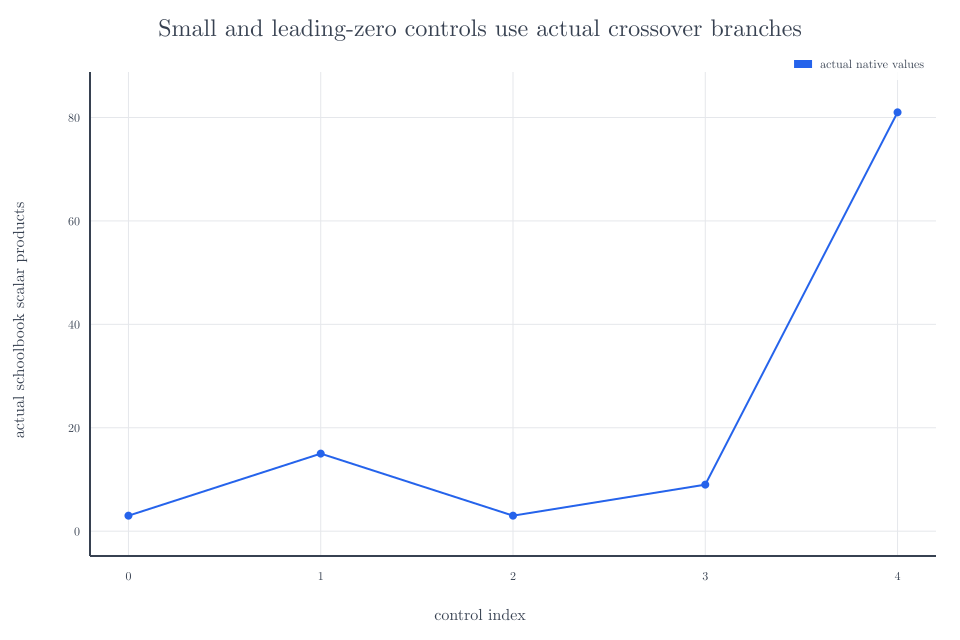
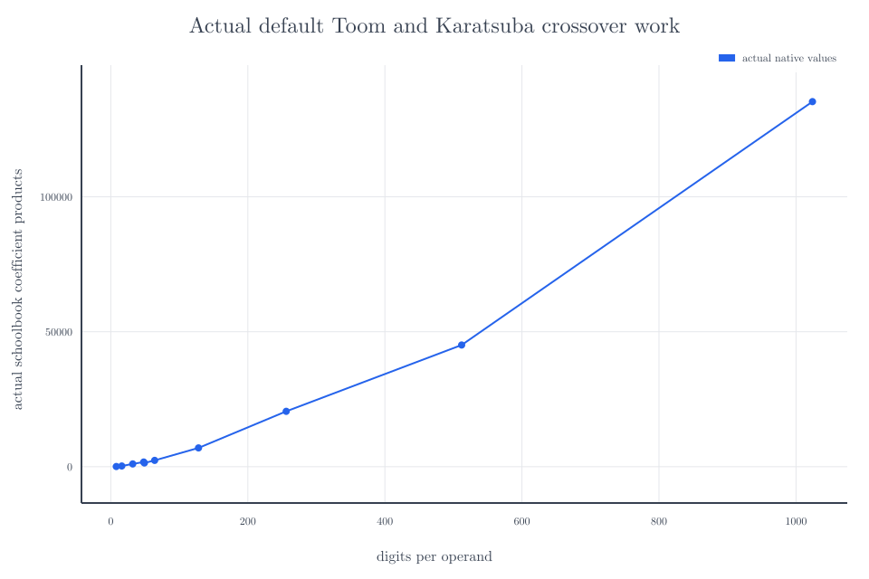

Toom-3: actual five products and exact coefficient interpolation
Abstract
Toom-3 replaces nine third-size products with five evaluations and exact interpolation. Actual checked signed coefficient states expose the implemented+2 evaluation point and the Karatsuba/schoolbook crossovers beneath the original decimal experiment.
Mechanism and mathematical scope
Write A=a0+a1*B+a2*B2 with B=10k, and similarly for the second operand. Evaluate at0,1,-1,2,infinity. From products w0,w1,wm1,w2,winf obtain c0=w0,c4=winf,c2=(w1+wm1)/2-c0-c4,s=(w1-wm1)/2,t=(w2-c0-4c2-16c4)/2,c3=(t-s)/3,c1=s-c3. Recompose sum(cj*Bj) before decimal carry. The native implementation uses coefficient polynomials with checked signed128 intermediates and verifies exact divisibility; it does not silently truncate interpolation. Fixed crossover asymptotic arithmetic is O(nlog3(5)), but default small inputs use Karatsuba below48 and schoolbook below32.
A tiny actual producing history
The table and native concept diagram read the same producing execution. Every block below is a complete editable C++ program.
#include <dm/dm.hpp>
int main() {
namespace a = dm::algorithms;
namespace g = dm::graphics;
std::filesystem::create_directories("build");
a::ToomOptions o;
o.toom_leaf = 3;
o.karatsuba_leaf = 3;
auto r = a::toom3_trace("123456", "789012", o);
std::print("| actual postorder branch | depth | split | returned exact coefficients |\n| --- | ---: | " "---: | --- |\n");
for (const auto &s : r.steps)
std::print("| {} | {} | {} | `{}` |\n", s.kind, s.depth, s.split,
s.result);
const auto &root = r.steps.back();
std::print("Actual products at0,1,-1,2,infinity `{}`; interpolated c0..c4 `{}`; decimal product {}.\n",
root.products, root.interpolated, r.value);
g::Diagram concept_diagram(48, 1100);
concept_diagram.node("n0", {0, 0},
"Actual123456 times789012; explicit crossover3");
concept_diagram.node("n1", {5, 0},
std::format("{} actual Toom internal calls",
r.toom_calls));
concept_diagram.node("n2", {10, 0},
std::format("Actual product {}", r.value));
concept_diagram.edge("n0", "n1").edge("n1", "n2");
concept_diagram.save_svg("build/toom3_tiny.svg");
}| actual postorder branch | depth | split | returned exact coefficients |
|---|---|---|---|
| schoolbook | 1 | 0 | ["12", "16", "5", "0"] |
| schoolbook | 1 | 0 | ["120", "294", "153", "0"] |
| schoolbook | 1 | 0 | ["40", "26", "-3", "0"] |
| schoolbook | 1 | 0 | ["748", "1544", "705", "0"] |
| schoolbook | 1 | 0 | ["16", "22", "7", "0"] |
| toom3 | 0 | 2 | ["12", "16", "13", "64", "100", "122", "95", "70", "46", "22", "7", "0"] |
Actual products at0,1,-1,2,infinity [["12", "16", "5", "0"], ["120", "294", "153", "0"], ["40", "26", "-3", "0"], ["748", "1544", "705", "0"], ["16", "22", "7", "0"]]; interpolated c0..c4 [["12", "16", "5", "0"], ["8", "64", "48", "0"], ["52", "122", "63", "0"], ["32", "70", "30", "0"], ["16", "22", "7", "0"]]; decimal product 97408265472.

The retained original experiment
#include <dm/dm.hpp>
int main() {
namespace a = dm::algorithms;
namespace g = dm::graphics;
std::filesystem::create_directories("build");
const std::string a0 =
"31415926535897932384626433832795028841971693993751", b0 =
"27182818284590452353602874713526624977572470936999";
auto r = a::toom3_run(a0, b0);
std::print("Original product {}; digits {}; matches native Karatsuba {}; actual Toom calls {}, " "Karatsuba calls {}, scalar leaves {}.\nRepunit R9 squared {}.\n\n| reference digits | " "schoolbook n^2 | Karatsuba n^log2(3) | Toom n^log3(5) |\n| ---: | ---: | ---: | ---: |\n",
r.value, r.value.size(),
r.value == a::karatsuba_multiply(a0, b0), r.toom_calls,
r.karatsuba_calls, r.schoolbook_calls,
a::toom3_mul("111111111", "111111111"));
std::vector<double> x, y, z, w;
for (int n = 3; n <= 81; n += 3) {
x.push_back(n);
y.push_back(n * n);
z.push_back(std::pow(n, std::log2(3.)));
w.push_back(std::pow(n, std::log(5.) / std::log(3.)));
std::print("| {} | {} | {:.9g} | {:.9g} |\n", n, n * n, z.back(),
w.back());
}
auto chart = g::RPlot::create();
chart.lines(x, y, "analytic n squared", {220, 38, 38}).lines(
x, z, "analytic Karatsuba exponent", {5, 150, 105}).lines(
x, w, "analytic Toom exponent", {37, 99, 235}).title(
"Original digit-exponent references: analytic, not timing").x_label(
"reference digits").y_label("analytic arithmetic reference");
chart.save_svg("build/toom3_original.svg");
}Original product 853973422267356706546355086954657449503488853576491197855062197565171182958845924077964935420693249; digits 99; matches native Karatsuba true; actual Toom calls 1, Karatsuba calls 0, scalar leaves 5. Repunit R9 squared 12345678987654321.
| reference digits | schoolbook n^2 | Karatsuba n^log2(3) | Toom n^log3(5) |
|---|---|---|---|
| 3 | 9 | 5.70452249 | 5 |
| 6 | 36 | 17.1135675 | 13.8029202 |
| 9 | 81 | 32.5415769 | 25 |
| 12 | 144 | 51.3407025 | 38.1041212 |
| 15 | 225 | 73.1241015 | 52.8375355 |
| 18 | 324 | 97.6247307 | 69.014601 |
| 21 | 441 | 124.643031 | 86.5000295 |
| 24 | 576 | 154.022107 | 105.189629 |
| 27 | 729 | 185.634157 | 125 |
| 30 | 900 | 219.372305 | 145.862457 |
| 33 | 1089 | 255.145346 | 167.719173 |
| 36 | 1296 | 292.874192 | 190.520606 |
| 39 | 1521 | 332.48935 | 214.223701 |
| 42 | 1764 | 373.929092 | 238.790601 |
| 45 | 2025 | 417.138082 | 264.187677 |
| 48 | 2304 | 462.066322 | 290.38481 |
| 51 | 2601 | 508.668327 | 317.354816 |
| 54 | 2916 | 556.902472 | 345.073005 |
| 57 | 3249 | 606.730465 | 373.516825 |
| 60 | 3600 | 658.116914 | 402.665571 |
| 63 | 3969 | 711.028972 | 432.500147 |
| 66 | 4356 | 765.436039 | 463.002872 |
| 69 | 4761 | 821.309513 | 494.157313 |
| 72 | 5184 | 878.622576 | 525.948143 |
| 75 | 5625 | 937.350011 | 558.361031 |
| 78 | 6084 | 997.468049 | 591.382531 |
| 81 | 6561 | 1058.95423 | 625 |

Explicit controls
#include <dm/dm.hpp>
int main() {
namespace a = dm::algorithms;
namespace g = dm::graphics;
std::filesystem::create_directories("build");
std::vector<std::pair<std::string, std::string>> cases{
{"", "123"}, {"00012", "003"}, {"0", "999"}, {"123", "456"},
{"111111111", "111111111"}
};
std::vector<double> x, y;
std::print("| supplied operands | actual normalized product | actual Toom calls | actual scalar " "products |\n| --- | --- | ---: | ---: |\n");
for (std::size_t i = 0; i < cases.size(); ++i) {
auto r = a::toom3_run(cases[i].first, cases[i].second);
x.push_back(i);
y.push_back(r.scalar_products);
std::print("| `{}` times `{}` | {} | {} | {} |\n",
cases[i].first.empty() ? "(empty)" : cases[i].first,
cases[i].second, r.value, r.toom_calls, r.scalar_products);
}
auto plot = g::RPlot::create();
plot.lines(x, y, "actual native values", {37, 99, 235}).points(
x, y, {37, 99, 235}, 4).title("Small and leading-zero controls use actual crossover branches").x_label("control index").y_label("actual schoolbook scalar products");
plot.save_svg("build/toom3_controls.svg");
}| supplied operands | actual normalized product | actual Toom calls | actual scalar products |
|---|---|---|---|
(empty) times 123 | 0 | 0 | 3 |
00012 times 003 | 36 | 0 | 15 |
0 times 999 | 0 | 0 | 3 |
123 times 456 | 56088 | 0 | 9 |
111111111 times 111111111 | 12345678987654321 | 0 | 81 |

Actual selected work and sensitivity
#include <dm/dm.hpp>
int main() {
namespace a = dm::algorithms;
namespace g = dm::graphics;
std::filesystem::create_directories("build");
std::vector<double> x, y;
std::print("| digits per repeated9 operand | actual Toom internals | Karatsuba internals | schoolbook " "leaves | scalar products | selected arithmetic |\n| ---: | ---: | ---: | ---: | ---: | ---: " "|\n");
for (std::size_t n : {8, 16, 32, 48, 49, 64, 128, 256, 512, 1024}) {
auto r = a::toom3_run(std::string(n, '9'), std::string(n, '9'));
x.push_back(n);
y.push_back(r.scalar_products);
std::print("| {} | {} | {} | {} | {} | {} |\n", n, r.toom_calls,
r.karatsuba_calls, r.schoolbook_calls, r.scalar_products,
r.operations);
}
auto plot = g::RPlot::create();
plot.lines(x, y, "actual native values", {37, 99, 235}).points(
x, y, {37, 99, 235}, 4).title("Actual default Toom and Karatsuba crossover work").x_label("digits per operand").y_label("actual schoolbook coefficient products");
plot.save_svg("build/toom3_work.svg");
}| digits per repeated9 operand | actual Toom internals | Karatsuba internals | schoolbook leaves | scalar products | selected arithmetic |
|---|---|---|---|---|---|
| 8 | 0 | 0 | 1 | 64 | 160 |
| 16 | 0 | 0 | 1 | 256 | 576 |
| 32 | 0 | 0 | 1 | 1024 | 2176 |
| 48 | 0 | 1 | 3 | 1728 | 3959 |
| 49 | 1 | 0 | 5 | 1381 | 4014 |
| 64 | 1 | 0 | 5 | 2336 | 6304 |
| 128 | 1 | 5 | 15 | 6959 | 18539 |
| 256 | 6 | 0 | 25 | 20512 | 56672 |
| 512 | 31 | 0 | 125 | 45088 | 151760 |
| 1024 | 31 | 125 | 375 | 135264 | 423848 |

API and interpretation
Only ASCII nonnegative decimal strings are accepted; leading zeros and the legacy empty-zero convention are retained. Default complete digit and actual arithmetic/capture policies bound materialization, and every signed128 intermediate is checked. Captured products/interpolation are real recursive producer values before carry. The old private comment mentioning-2 is corrected to the actual+2 implementation.
Reusable producers, fixtures and histories live in the canonical C++ library. Captured records own their values and do not come from a separate report replay. Selected counters and record/scalar policies are specified at their API boundaries; they are not peak-byte or wall-time budgets. Synthetic structural inputs are controlled fixtures for these mechanisms.
References
- Toom-Cook polynomial evaluation/interpolation, equations derived above
Verified in the shared ten-document batch: 70 scoped native cases;20 directly
instrumented ASan/UBSan cases;75 executable public examples;387/387 definitions
across25 full scopes;10 hovers;9766 independent records/134784 checks;frozen
valid-input comparisons across all ten families;13 checkout/installed standalone
headers and linked ten-family consumer;40 executed programs and40 inspected
figures with both exports. Receipts: build/mepml-conversion/batch-394-403/.